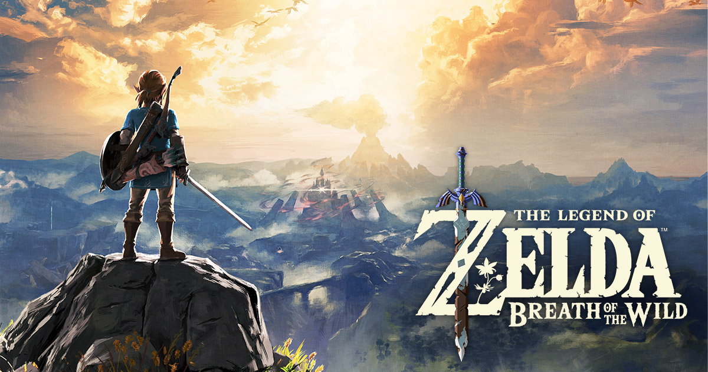

나와 어울리는 플래시 게임은
젤다의 전설
(INFJ)

완벽주의 성향과 동시에 상상력과 뛰어난 인내심으로 게임을 처음부터 끝까지 즐길 줄 아는 당신에게 ‘젤다의 전설’을 추천합니다!
남들은 쉽게 루즈하다고 그만둘 게임이 당신에게는 너무나 즐길 거리가 많은 게임이 됩니다! 오픈월드의 드넓은 맵을 구석구석 다니면서 숨겨진 던전과 에피소드를 찾아봐요!
당신의 상상력과 직관력을 사용하여 던전의 미로를 탈출하는 재미를 느껴보세요 ㅎㅎ
점점 강력해지는 몬스터들은 당신의 뛰어난 관찰력을 발휘할 기회입니다! 적의 패턴을 분석하고 당신만의 공략을 만들어보세요! 디테일한 설정들은 항상 당신의 호기심을 자극시키고 신비로운 세계의 빠져들게 만들거에요!
게임과 잘 어울리는 그래픽과 사운드, 연출은 당신을 한층 더 게임에 매료시키죠. 마지막 던전을 깨기까지 조그만 목표들을 차근차근 달성해봐요!